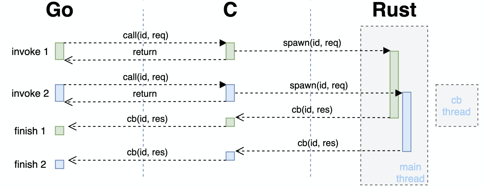

背景
故事发生在蚂蚁一个内部项目上，这个项目有 Go 和 Rust 两个部分，其中 Rust 库作为一个存储组件被 Go 的业务部分依赖着。出于种种原因，两个部分需要作为同一个进程来运行，中间有一层 C FFI 接口作为理想与现实的桥梁。大概是这个样子的

Rust 部分首先将使用到的 Library 的接口和结构使用另一个小小的 cdylib shim 项目封装一下，并通过这个项目生成 Rust 库的编译产物、一个动态链接对象和一份 C 的接口头文件。再基于 C header 写一个 Go 的 SDK 给上层使用。单独左边的 Go 或者右边的 Rust 项目都不够刺激，连在一起就很得劲了。这里主要集中在中间那一团麻花部分上，也是 too young too simple 掉了很多头发的地方。
大概会从线程、内存和信号三个方面讲几个事故。
线程
刚开始的时候 shim 和 SDK 都非常简单，SDK 每个请求都通过 CGO 走到 shim，shim 在进行一些结构的转换后调用 library 来处理请求，等待请求完成之后把结果返回给 SDK。比较符合直觉的流程，但是在测试的时候出现了问题，整个程序的行为都不太正常。当时刚开始连调，在这之前 component 和 library/shim 都只单独进行了测试，当然单独测试的时候大家都是一切正常，所以连调起来场景就变成了…
先看下 Go 在进行 CGO 调用的时候会发生什么。Go runtime 提供的线程与系统线程不是一一对应，在进行非 Go 的调用时，会把当前 goroutine 放在一个系统线程上，使用这个系统线程完成后续的调用流程。所以如果不做特殊处理的话对于 shim 来说每次请求都有可能发生在一个新的线程上，而使得之前保存在 TLS 中的状态失效。并且更加严重的是，shim 的 TLS 中包括了一些 library 的线程句柄，导致 library 的部分状态也出现了混乱，最终整个进程的行为都变得很奇怪。
1 | |
同时来都来了，也顺便将 library 异步的接口暴露到了上层，由原来一次 CGO 完成整个请求的方式变成了一次 CGO 提交请求，结果通过后续另一次 C 到 Go 的调用异步地返回，也能够防止大请求把 Go runtime spawn 出来的 CGO 线程阻塞太长时间。现在整个的交互流程看起来大概是这样的：

不过这只是很基础的方案，“变电器” CGO 的原理很简单，但也存在许多优化空间，能够在解决问题的同时降低损耗率。这里是找到的一些操作（1,2,3），当然大部分都还没做（
内存
除此之外，为了通过 C 的接口来传递数据，需要对数据结构进行一些修改，这一部分主要在 shim 和 SDK 进行。简单来说就是把所有需要传递的类型都能够用 C 表示出来，在这里 有一些例子，或者是像这样：
1 | |
Go 与 Rust 在远离 FFI 边界的地方（一般来说）都能够很好地处理内存问题，这些非法的指针和地址基本上都是没能好好处理另一方丢过来的东西造成的。在当时为了减少工作量已经通过大量的拷贝减少了许多使用裸指针的地方，剩下的主要集中在两处，即接收对方传递过来的数据以及通知对方回收这一块数据的内存。这种时候除开遵守老生常谈的“谁分配谁释放”原则外，剩下的基本也只能现场抓头发后悔定位了。
最先的入手点就是发生错误时所打出来的堆栈，按照经验跟着上面的错误信息后的第一条 Go routine backtrace 通常是发生问题的地方（应该……？）。可以先顺着调用栈检查一下代码中是否有不正确的指针使用。不过这个堆栈中只会存在 Go 这一部分的信息。当问题出现在 Go 之外的时候日志会变得非常迷惑，基本只能够知道是哪一个 CGO 函数值得怀疑。这一部分就和普通的内存问题排查差不多，列举几个常用的步骤：
打印日志
如果问题比较好复现的话，可以在路径上多增加一些日志输出，把值得怀疑的指针地址以及它们解引用之后的内容打印出来，有时能够观察到一个指针是如何一步步走向非法的。注意解引用时最好放到另一行日志中，毕竟每一个解引用操作都是在非法边缘蹦迪，如果这个指针在解引用的时候出错可能会带着其他有用的日志输出一起消失。
借助工具
也可以通过一些工具来监测内存的使用情况，比如各种 sanitizer 和 valgrind 等，有的时候不是所有的内存问题都会导致程序挂掉，一些非法的内存操作有可能被忽略，比如数组稍微越界一点点，不小心 free 多次或忘记 free 等。这些工具能够及时地发现这些问题。不过它们都或多或少会带来一些性能影响，所以也不是所有情况都适用。
1 | |
特殊值
有些环境会在内存操作前后把那一块内存设置上特殊值来表示这块内存的状态，使它能方便地被观察到。如 jemalloc 的 --enable-fill 参数 或 MariaDB 的 TRASH_ALLOC() 宏，会把回收的内存填上一个特殊值，如果看到这个值的话就知道是发生了 use after free。
缩小范围
分为两个方面的缩小。如果条件允许的话也可以通过注释掉一些代码来缩小排查范围，比如先不进行 free 操作或者暂停部分路径进行观察；以及缩短调用路径，把各个组件单独拿出来 mock 测试。
还有一些其他的小地方，比如观察指针是否对齐，出错的指针与周围指针的范围等。比如这里 Go 与 Rust 运行在同一个进程内，能够观察出 Go 出来的指针和 Rust 出来的指针在两个地址段上，指针本身的值有时候也能够说明一些信息。不过说归说，真写出来的内存问题都是表面上千篇一律，背地里各有千秋。当程序内存出错时可能会带来各种千奇百怪的表现，搞多了就能够对不同的问题进行分类并案。毕竟一般来说全然无计可施的情况比较少，而通常是有许多手段但不知道哪一个才能得到信息。每个技能都会有施法时间消耗，万一被 invalid pointer 纠缠太久导致做梦都是panic就很痛苦了😇。
在制作 shim，binding 和它们的 c demo 的时候通过一些 C 重新体验了一下文明的进步。不过现在回过头想想应该还有更先进的方法来避免一些问题的，有的时候的确是自己作死。
信号
这是一个花了比较久时间的问题，噩梦从一次 SIGSEGV 开始（这个本质上也是一个内存问题）。
1 | |
这里从复现就不顺利，原始场景大概需要半天到一天才能出现，同时也有其他未解决的问题混杂在一起，并且存在许多不同的系统环境和流量，各方面来说都非常地狱。
在花了一些时间把其他的因素都排除掉之后，终于能够开始看 SIGSEGV 产生的 core dump 文件。但是通过 gdb 来看 core 的时候，都基本上是这样的
1 | |
问号的那些很好猜是 Go 的 m:n 线程来的，但是其他非 Go 的线程却都停在 syscall 上。一下子完全不知道到底该 blame 谁，为了查看下 Go 里面发生了什么事情，也用过 delve 来看看 Go 的堆栈，用法和 gdb 类似。这是一个有些痛苦的过程，dump 出了几千个 goroutine 的 backtrace，而且花了些时间简单看了下栈顶之后发现基本都是业务 goroutine，没有什么好怀疑的。
1 | |
唯一的信息就是看到了 SIGSEGV 是从哪里出来的（Goroutine 17）
1 | |
看着有点眼熟，就是经常在错误信息里面出现的第一行 stack。这个 goroutine 只有上面两层。只能说这个信息虽然有用，但基本没用。
又经过了一些时间的挣扎，最后怀疑上面看到的 core dump 并不是实际上的第一手堆栈。通过把整个进程挂在 gdb 里面运行，终于能够拿到非法操作实际上出现的位置，让 gdb 在信号第一次抛出的时候先于 Go runtime 捕获到它。现在回看起来想说：如果早知道，堆栈信号会被 Go runtime 转手…
在能够看到第一案发现场之后，后续的流程就比较普通了，而且根因是个自己挖的弱智坑。
最后
分享我很喜欢的一句话：
君子不立于花活之下。
如果再让我选一次，打死也不会表演这个杂技。特别是最后发现一通操作猛如虎，一看QPS只有5 😇。还不如乖乖弄一些靠谱的东西（虽然被毒打之前也觉得 CGO 不过如此……）。